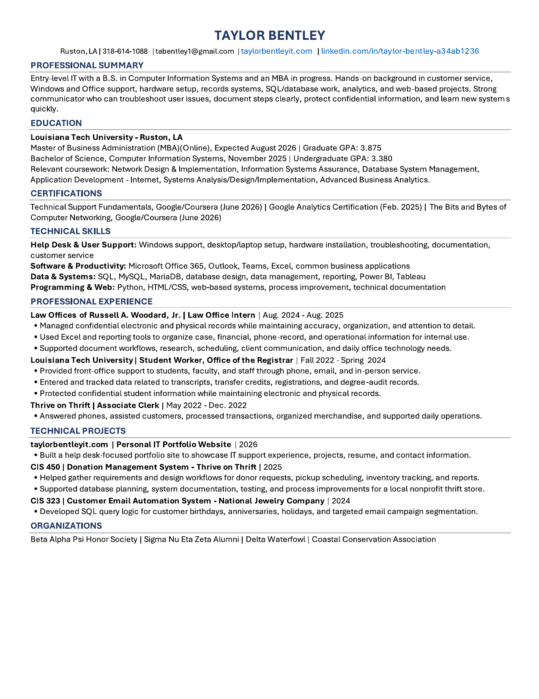

Resume
Entry-level IT with a B.S. in Computer Information Systems and an MBA in progress. Hands-on background in customer service, Windows and Office support, hardware setup, records systems, SQL/database work, analytics, and web-based projects.
Work Experience
Law Office Intern
Aug 2024 – Aug 2025Law Offices of Russell A. Woodard, Jr.
- Managed confidential electronic and physical records while maintaining accuracy, organization, and attention to detail.
- Used Excel and reporting tools to organize case, financial, phone-record, and operational information for internal use.
- Supported document workflows, research, scheduling, client communication, and daily office technology needs.
Student Worker, Office of the Registrar
Fall 2022 – Spring 2024Louisiana Tech University
- Provided front-office support to students, faculty, and staff through phone, email, and in-person service.
- Entered and tracked data related to transcripts, transfer credits, registrations, and degree-audit records.
- Protected confidential student information while maintaining electronic and physical records.
Associate Clerk
May 2022 – Dec 2022Thrive on Thrift
- Answered phones, assisted customers, processed transactions, organized merchandise, and supported daily operations.
Education
Master of Business Administration (MBA), Online
Expected Aug 2026Louisiana Tech University · Graduate GPA: 3.875
B.S., Computer Information Systems
Nov 2025Louisiana Tech University · Undergraduate GPA: 3.380
- Relevant coursework: Network Design & Implementation, Information Systems Assurance, Database System Management, Application Development – Internet, Systems Analysis/Design/Implementation, Advanced Business Analytics.
Technical Skills
Windows support, desktop/laptop setup, hardware installation, troubleshooting, documentation, customer service.
Microsoft Office 365, Outlook, Teams, Excel, common business applications.
SQL, MySQL, MariaDB, database design, data management, reporting, Power BI, Tableau.
Python, HTML/CSS, web-based systems, process improvement, technical documentation.
Certifications
- Technical Support Fundamentals — Google/Coursera (June 2026)
- Google Analytics Certification (Feb. 2025)
- The Bits and Bytes of Computer Networking — Google/Coursera (June 2026)
Organizations
- Beta Alpha Psi Honor Society
- Sigma Nu Eta Zeta Alumni
- Delta Waterfowl
- Coastal Conservation Association
